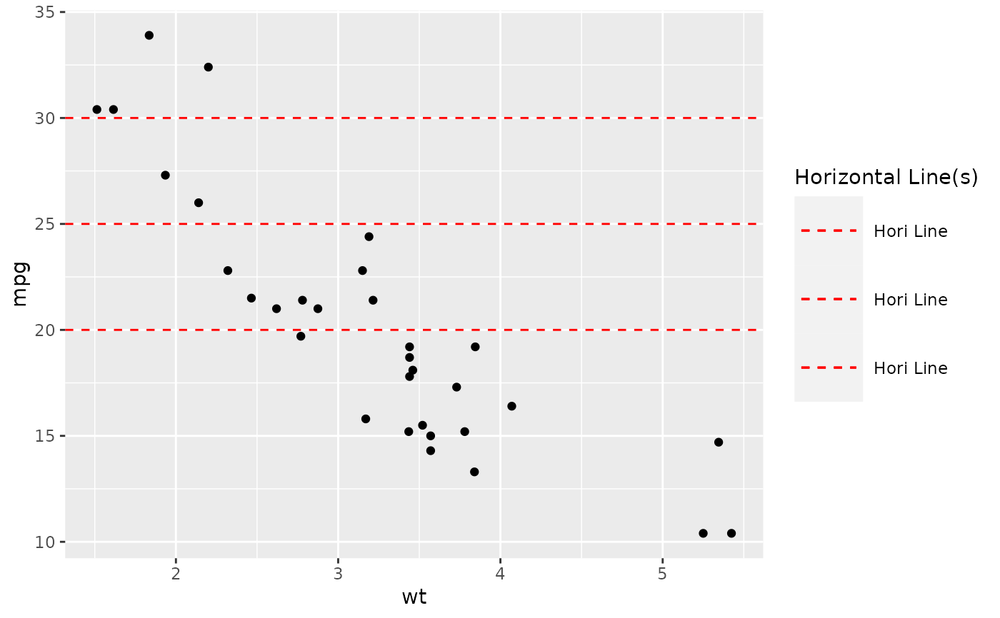

add_axes_lines.RdThis function is currently designed to be used with ('g_boxplot'), ('g_correlationplot'), ('g_spaghettiplot'), and ('g_density_distribution_plot'), but may also work in general.
add_axes_lines(
plot,
agg_label = NULL,
color_comb = NULL,
hline_arb = numeric(0),
hline_arb_color = "red",
hline_arb_label = "Horizontal line",
hline_vars = character(0),
hline_vars_colors = "green",
hline_vars_labels = hline_vars,
vline_arb = numeric(0),
vline_arb_color = "red",
vline_arb_label = "Vertical line",
vline_vars = character(0),
vline_vars_colors = "green",
vline_vars_labels = vline_vars
)('ggplot2 object') which the horizontal and/or vertical lines should be added to
('character') label for the line denoting the Mean or Median.
('character') denoting the color of the Mean or Median line.
('numeric vector') value identifying intercept for arbitrary horizontal lines.
('character vector') optional, color for the arbitrary horizontal lines.
('character vector') optional, label for the legend to the arbitrary horizontal lines.
('character vector'), names of variables `(ANR*)` or values `(*LOQ)` identifying intercept values. The data inside of the ggplot2 object must also contain the columns with these variable names
('character vector') colors for the horizontal lines defined by variables.
('character vector') labels for the legend to the horizontal lines defined by variables.
('numeric vector') value identifying intercept for arbitrary vertical lines.
('character vector') optional, color for the arbitrary vertical lines.
('character vector') optional, label for the legend to the arbitrary vertical lines.
('character vector'), names of variables `(ANR*)` or values `(*LOQ)` identifying intercept values. The data inside of the ggplot2 object must also contain the columns with these variable names
('character vector') colors for the vertical lines defined by variables.
('character vector') labels for the legend to the vertical lines defined by variables.
ggplot object
p <- ggplot(mtcars, aes(wt, mpg)) +
geom_point()
p %>% goshawk:::add_axes_lines(
hline_arb = c(20, 25, 30),
hline_arb_color = "red",
hline_arb_label = "Hori Line"
)
